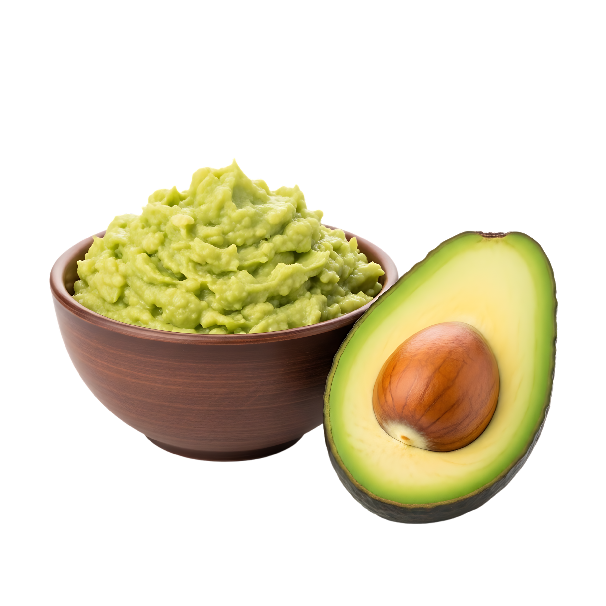

Primeros alimentos
Texturas suaves y sabores simples para comenzar.



Informacion, recetas y consejos para acompañar cada etapa de su crecimiento de forma saludable, segura y deliciosa.
Explora las etapas →


Basada en recomendaciones generales de especialistas.
Ideas fáciles y nutritivas para cada etapa.

Consejos para una introducción progresiva.
Desde los primeros bocados hasta una dieta más variada.
Cada etapa trae nuevos sabores, texturas y descubrimientos.
Texturas suaves y sabores simples para comenzar.

Más variedad de verduras, frutas y combinaciones.

Incorporamos legumbres, cereales y nuevas texturas.

Comidas más variadas y adaptadas a la familia.

Ideas nutritivas, faciles y deliciosas para cada etapa.